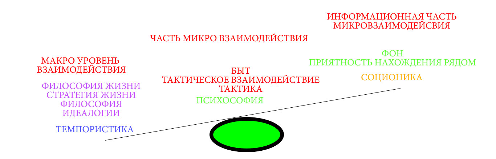

Здравствуйте, а что думаете об идее знакомства по психологическому расчету... Да звучит странно, но если хорошо подумать, то это расчет ой как пригодиться, например для стартапов, бизнеса, поиска совместимых музыкантов, чтобы хорошо отдохнуть, дружбы, туризма, партнерства, решения глобальных проблема сообща. Мы живем в мире где конкурируют уже не люди, а группы людей и чем эффективней группа людей, тем она конкурентноспособнее.
По психологическому расчету это когда сразу выбираешь по качествами которые нужны. Обычно, мы собираем окружение случайным образом или методом перебора. А этот подход открывает возможность, знакомиться включая голову и психологический расчет. Понимая свое и чужое влияние.Свои сильные и слабые стороны, и другого человека. Для любого дела необходми не просто люди, а соместимые люди, иногда проще научить, чем работать в несоместимом не собраном коллетиве.
Далее в приоритете расставленны типологии, этот прироирет отображает ВЕС в отношения между людьми. При реальном же общении, хорошо притягивает психософия, соционика, а темпористика показывает себя спустя время.
Другими словами, на расстоянии хорошо видна филосфия жизни и идеалогии человека, глобальное или локальное мышление. При близком общении на философию жизни, идеалогии люди могут не обращать вначале внимания из-за того что общение может быть однразовое и не препологает взаимные дела, и чего-то серьезного.
1. Типология Темпористика показывает какое время для человека важное. Каким временем помочь может, С каким у него тяжко и какое игнорирует полностью. И описывает макро взаимодействие людей, стратегическое. Другими словами, как распространится идеологии, философии жизни и их взаимодействие.
Пример: Глобальное мышление vs Локальное мышление. Что-бы заниматься чем-то глобальным, нужно пожертвовать чем-то локальным и наоборот. Поэтому идет непонимание, потеря информации при переходе от глобального смысла\мышления к локальному смыслу\мышлению и наоборот.
Пример: Мне нужно найти людей для стартапа и распространить идею, собрать коллектив, а мне, нужно понять как на холодильник насобирать, сколько запятых пропущенно, пуговиц пришито. Ты говоришь о глобальных вещах, а другой человек о локальных
Глобальное мышление это качественная характеристика мышления, способного перерабатывать огромный объем информации по широкомасштабным проблемам мира, страны или народа. Это мышление широкими категориями, системное, прогнозное, целостное. Человек глобального мышления вычленяет проблему целиком, во всех ее связях и зависимостях, несмотря на границы охвата, и решает, способствуя дальнейшему духовному, социальному или экономическому развитию и самосовершенствоанию народов, государств, больших человеческих общностей. Люди с глобальным мышлением, способные планетарно мыслить, особенно нужны в сфере науки, политики и управления.
2. Типология Психософия показывает, что у человека с волевыми качествами, эмоциональностью, типом мышления (логикой), с физическим миром (золотые руки или нужна помощь в быту). Другими словами с помощью каких амбций\прироритетов будет реализовать, свою философию жизни, стратегию жизни, важные для себя акценты времени.
ВНИМАНИЕ: что бы реализовать идею знакомтсва по психологическому расчету, взята информационная соционика и принцип обмена информации. В теории должна работать соционика (DCNH) вместо психософии, вместо модели А, штурвал Калинаускаса, но новые термины, и разный инструмент описания миро уровня взаимодействия, вызовет путаницу и не понимание. Можете сами придумать себе типологии для описания микро уровня взаимодействия, но зачем изобретать велосипед и плодить разные названия одного и того же.
3. Типология Cоционика*, иноформациионная, (признаки рейнина не берем из-за двузначности их объеснения, описание поведения тоже отбрасывает, оставляем принцип циркуляции информации, модель А, квадры и акценты на вадровой инофрмации, говорить о ценностях не правильно, тут скорее о квадровых акцентах на информации, идет речь, если за основу берем имено информационную соционику!) показывает, как идет обмен информацией в фоне, игнорирование, коверканье, попадание на самооценку, внушение информации. Грубо говоря фон, при долгой жизни подо одной крышей.
Обратите внимание на вес Макро уровня (Для описинаия взята типология Темпористика) и Микро уровней (Психософия+Соционика или любой другой инстурмент/типология описывающий микровазимодействие людей)
Темпористика - это МАКРО уровень взаимдейсвтия людей.
Психософия+Соционика - это МИКРО взаимодействие людей.
C помощью эти трех типологии можно сделать психологический расчет любой группы людей. А вот мостик в официальную науку, обратите внимание на уровни взаимодействия людей. Микро и макро уровень http://www.persev.ru/book/psihologiya-vzaimodeystviya-lyudey
Этой идее очень сильно понадобиться сарафанное радио, поэтому расскажите о ней друзьям, знакомым.
Что конкретно можно реализовать:
Тут возникает проблема доверия, но она решаеться взаимным влиянием друг на друга. Общее философией жизни. Общей идеалогией.
Помните, что типологии не могут полоностью описать взаимодействие людей, а лишь какую-то важную часть. Типологии в данном случае лишь инструменты реальный мир намного сложнее.
Лучше понять принцип чем запоминать большое количество фактов из этого принципа.
Пока собираю единомышлеников и посмотреть что будет если собрать в одном месте совместимых людей. Тут пока сама идея интересна, а практика и кейсы, я думаю, появятся в процессе общения.
Телеграмм: https://t.me/joinchat/FDAy4RTR8Rn7X9ACmZB0oQ
Группа в контакте: https://vk.com/designofhumanity
Группа в Facebook: https://www.facebook.com/groups/1209941655840143/